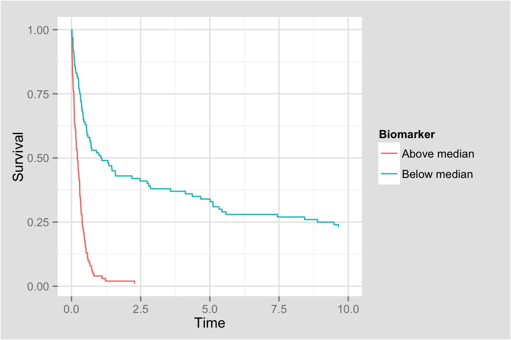
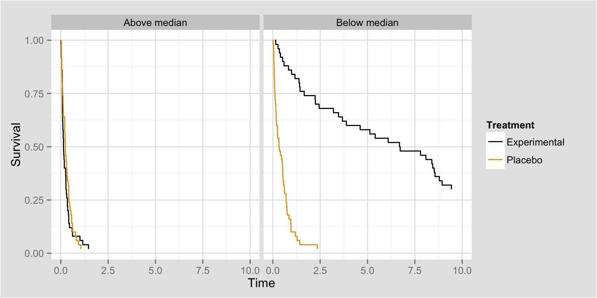
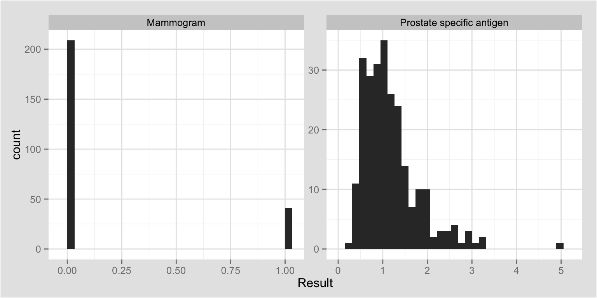
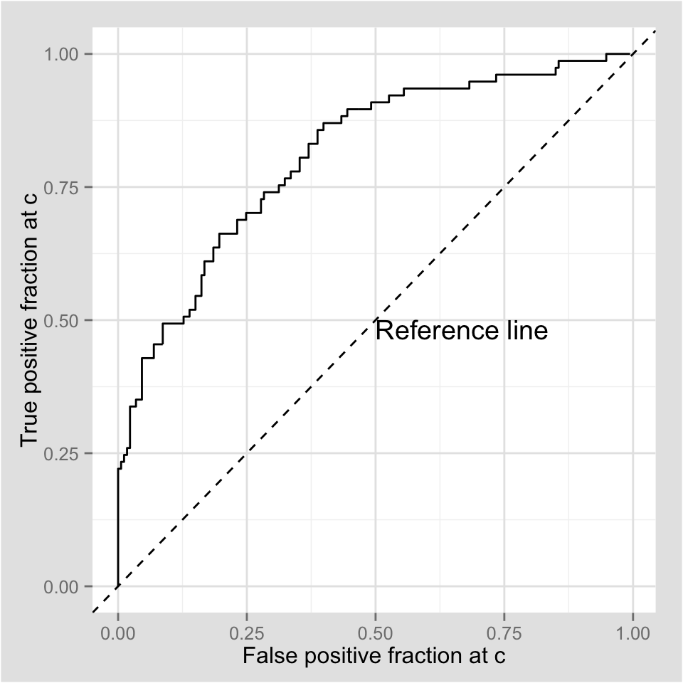
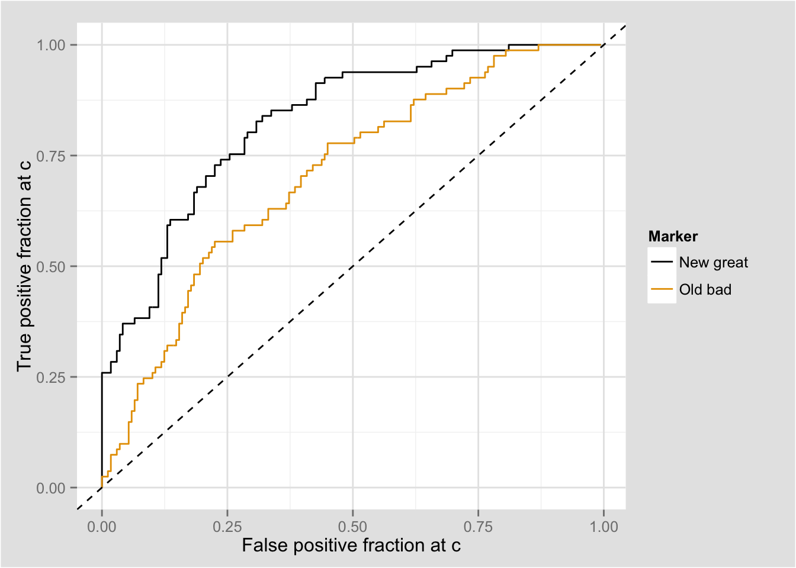
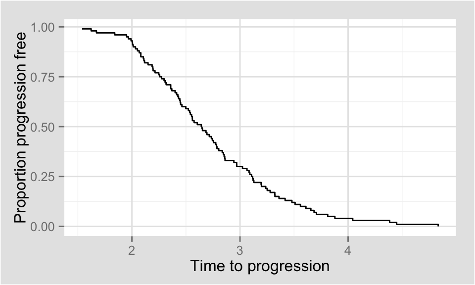
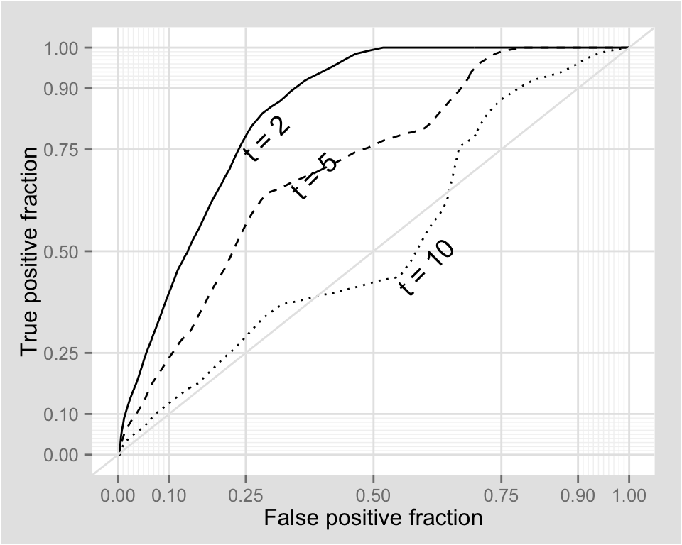
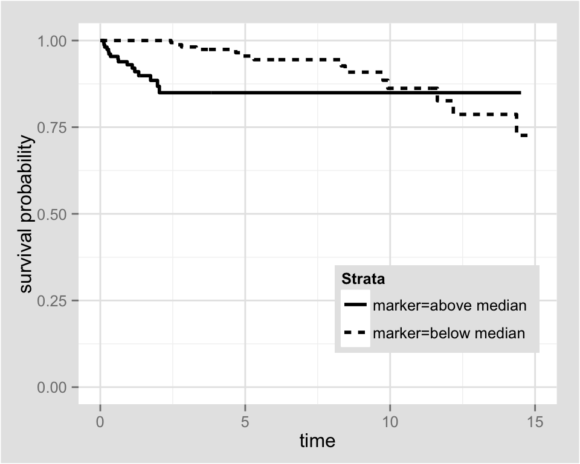

October 30, 2014
 * p < 0.001
 * p < 0.001
| Search Term | Results |
|---|---|
| Clinical Trial(s) | 926 |
| Survival | 714 |
| Longitudinal | 634 |
| (Bio)marker(s) | 228 |
| Gene/Genomic(s) | 180 |
Search results from pubmed restricted to journals: Statistics in Medicine, Biometrics, Biostatistics, Biometrical Journal
Responsibilities:
Much of the published statistical research will never be used in practice.
Greater impact through software and education
Some of my efforts on this front can be found here:
Binary biomarker and Binary outcome
|
Condition (as determined by "Gold standard") |
||||
| Total population | Condition positive | Condition negative |
Prevalence = Σ Condition positive
Σ Total population
|
|
|
Test outcome |
Test outcome positive |
True positive |
False positive |
Positive predictive value (PPV) = Σ True positive
Σ Test outcome positive
|
|
Test outcome negative |
False negative |
True negative |
Negative predictive value (NPV) = Σ True negative
Σ Test outcome negative
|
|
|
True positive fraction (TPF, Sensitivity) = Σ True positive
Σ Condition positive
|
False positive fraction (FPF) = Σ False positive
Σ Condition negative
|
Accuracy (ACC) = Σ True positive + Σ True negative
Σ Total population
|
||
|
False negative fraction (FNF) = Σ False negative
Σ Condition positive
|
True negative fraction (TNF, Specificity) = Σ True negative
Σ Condition negative
|
|||
Quality of test-based classifications:
\[ TPF = Pr\{\mbox{Marker positive} | \mbox{Has condition} \} = Pr\{M = 1 | D = 1\} \]
\[ FPF = Pr\{M = 1 | D = 0 \} \]
Ideal: TPF = 1, FPF = 0; Bad: TPF = FPF
Predictions
\[ PPV = Pr\{D = 1 | M = 1\} \]
\[ NPV = Pr\{D = 0 | M = 0\} \]
Ideal: PPV = NPV = 1; Bad: PPV = \(Pr\{D = 1\}\); NPV = \(Pr\{D = 0\}\)
Approximately 50% of women screened annually for 10 years in the United States will experience abnormal mammogram but have no cancer
Mammograms miss about 20 percent of breast cancers that are present at the time of screening
All of the information in that table can be obtained given only 3 of the quantities:
Why? Bayes Rule:
\[ Pr\{M = 1 | D = 1\} = \frac{Pr\{M = 1 \mbox{ AND } D = 1\}}{Pr\{D = 1\}} = \frac{Pr\{D = 1 | M = 1\} Pr\{M = 1\}}{Pr\{D = 1\}} \]
What if the test yields a continuous measurement?



http://sachsmc.shinyapps.io/plotROC/
Send me your feedback.

A little algebra (Bayes rule again):
\[ TPF(c, t) = \frac{P(T \leq t | M > c) P(M > c)}{P(T \leq t)} \]
The KM curve is an estimate of \(P(T > t)\), combine that with the proportion of \(M > c\) and we are done.
Show curves for a small subset of event times:

The Janes lab at the Fred Hutch has done lots of work in this area. TreatmentSelection R package, and others.
Janes, Holly; Brown, Marshall D; Pepe, Margaret; Huang, Ying; "An Approach to Evaluating and Comparing Biomarkers for Patient Treatment Selection" 2014. The International Journal of Biostatistics.